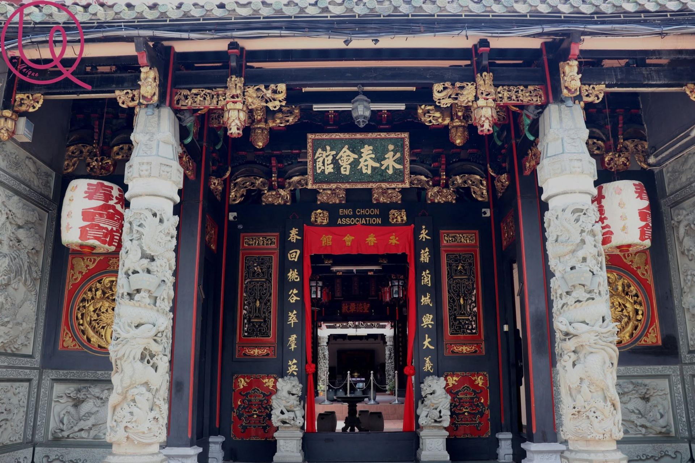

马六甲永春会馆空间现状及活动
马六甲永春会馆
一、外部与内部影像
外部照片：会所沿街外观

- 补充影像：入口、天井及祭祀空间：Victorian Web：会馆建筑照片。
二、永春会馆近期与泉州交流活动介绍
马六甲永春会馆（Eng Choon Association Malacca）是马六甲永春籍乡亲的社团组织，会所位于荷兰街（Jalan Tun Tan Cheng Lock）122号。会馆联系祖籍福建泉州永春的乡亲，开展乡谊交流、文化传承及教育奖励等工作。
- 官网入口：马六甲永春会馆。
- 地址与影像来源：Penang Travel Tips：Eng Choon Association, Malacca。
- 历史与建筑资料：Victorian Web：Chinese Buildings in Malacca。
- 交流活动来源：《东方日报》：建议在甲永春会馆设永春展览馆。
三、会馆事件与活动记录
1. 2024年参与鸡场街永春文艺汇演
2024年1月5日晚；中国福建省永春县代表团、马六甲永春会馆及马六甲潮州会馆会馆参与永春文艺汇演并呈现白鹤拳表演，与永春县代表团开展传统文化交流。活动场地位于鸡场街。
- 资料来源：《东方日报》原报道及配图。
2. 2024年与永春县代表团并讨论设立永春展览馆
2024年4月15日，中国福建省永春县县长张照绿及代表团到访永春会馆，双方交流乡情、文化传承及合作事项。林万锋提出设置永春展览馆的建议，永春县方面表示可提供特产支持。
- 拟展示内容：永春先民在马六甲的开拓历史，以及两地特色产品、文化旅游和投资资料。
- 资料来源：《东方日报》：建议在甲永春会馆设永春展览馆。